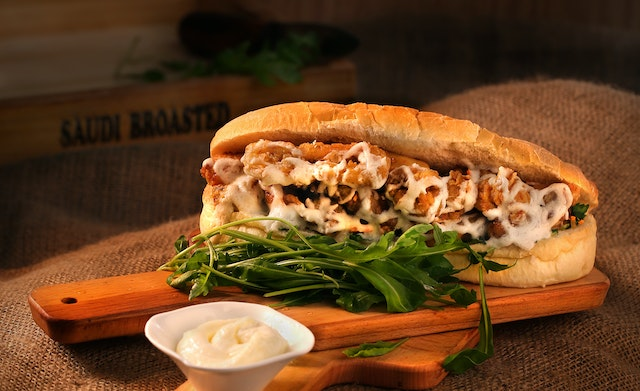
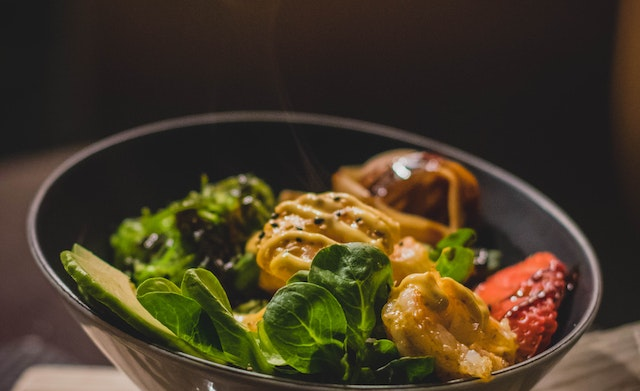
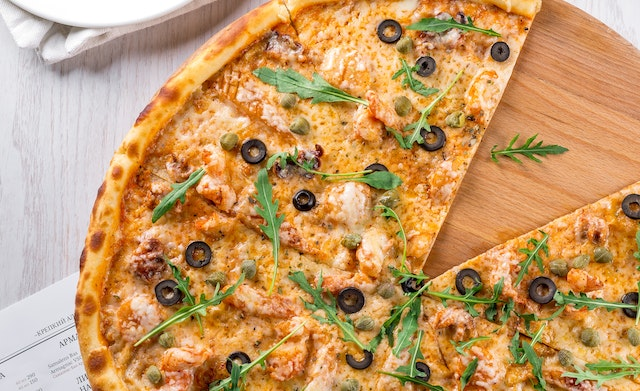

.jpg)



Somos una pagina que busca mostrar las culturas del mundo a traves de su comida tipica.
"Gracias a conocimientos previos sobre la cultura gastronomica puedo dar a conocer el como yo siendo estudiante universitario de gastronomia, empezando a estudiar en pandemia y continuando en la actualidad, conoci culturas enteras gracias a documentales y material enviado por mis docentes de materia."
Esta serie nos muestra como los 4 alementos principales de la naturaleza estan presentes en cada comida que se consume en cualquier parte del mundo, mientras va mostrando sus culturas
Esta serie muestra los viajes de la chef y escritora Samin Nosrat, donde se puede ver como ella busca conocimientos para la creacion de platos propios inspirados en culturas del mundo.
Callejera de Estados Unidos! Muestra como es la vida cotidiana de algunas personas trabajadoras en el sector de la gastronomia callejera, la mas reconocida de USA.
Callejera Latinoamericana! Capitulos que muestran comidas tipicas de algunos de los paises de latinoamerica, mostrando como es la verdadera comida callejera de latam.
Callejera Asiatica! Y para terminar con la que para mi perspectiva es una de las mejores cocinas del mundo, la cocina asiatica, siendo una de las cocinas consideradas sucias, pero tambien una de las mas llamativas y llenas de sabor